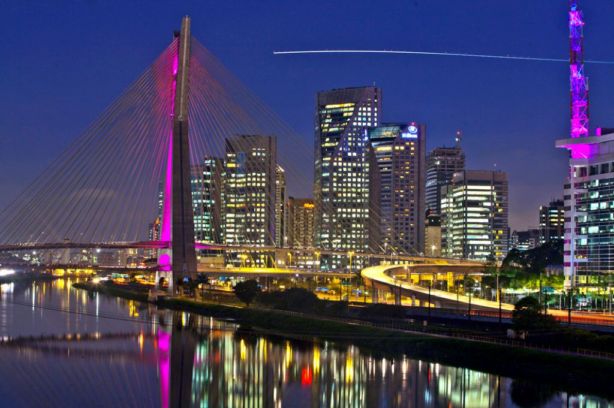

Limeira é a cidade onde está localizada a Faculdade de Tecnologia da Unicamp, onde estudam os alunos Paulo Alexandre Costa Guimarães e Vinícius Ferreira Lopes.
Campinas é a cidade de nascimento do aluno Vinícius Ferreira Lopes.
Piranguinho é a cidade de nascimento do aluno Paulo Alexandre Costa Guimarães.
A cidade de São Paulo é conhecida como um dos pólos industriais do Brasil.
Rio de Janeiro é nacionalmente conhecido como a "Cidade Maravilhosa".